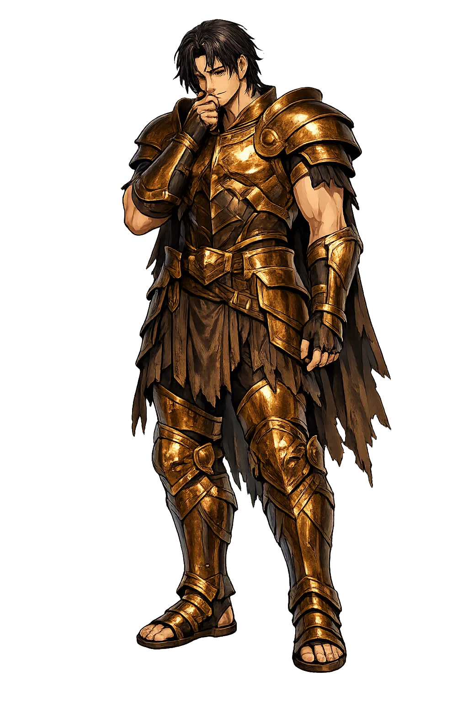
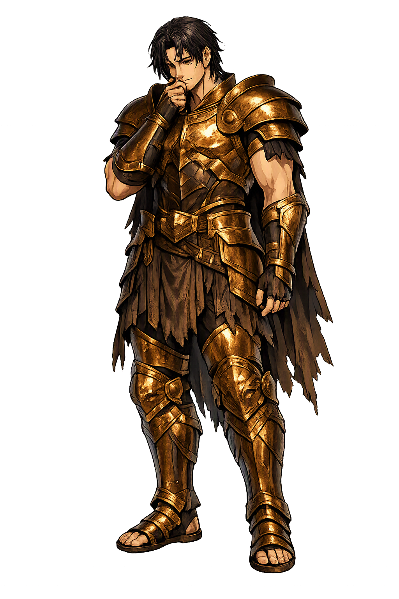

The Living Myth
Afterthought, Hindsight · Afterthinker (from ἐπί + μῆτις)

Stories of Epimētheús
Epimētheus appears most fully in Hesiod's didactic poems and Plato's Protagoras, where he is less a hero than a caution: the type of mortal who acts first and understands later. His small cluster of myths is the Greek anatomy of hindsight.
In Plato's Protagoras (320c-322d), the gods mold mortal creatures from earth and fire and assign Promētheus and Epimētheus the job of equipping each kind with its powers: Epimētheus persuades his brother to let him distribute, while Promētheus inspects. Epimētheus — true to his name — hands out strength, speed, claws, hides, wings, and hooves until every species is protected; then he looks at the naked human being, 'still unprovided with its portion,' and realizes the stock is spent. Promētheus must steal fire and the mechanical arts from Athena and Hephaestus to keep the bare, shoeless, unbedded creature alive. The myth defines the human being by an original clerical error: we are the species whose equipment ran out, and whose survival has depended ever since on borrowed fire and compensating craft.
After Zeus had Promētheus bound for the theft of fire, he devised a second punishment: the fashioned Pandora, sent to earth with a great storage-jar as her dowry. Hesiod's Works and Days (83-89) records the crucial detail — 'before this' Promētheus had warned his brother never to accept a gift from Olympian Zeus, but to send it back, 'so that no evil come to mortals.' Epimētheus heard the warning and forgot it in the moment it mattered: 'he took the evil, and only when he had it perceived the evil.' Apollodorus (Library 1.7.2) compresses the same scene. The myth is a miniature anatomy of hindsight: the warning exists, it is known, it is even repeated — and it is useless one heartbeat after the door opens. Every later retelling, from Apollodorus to the modern proverb about gifts from above, is a footnote to that single line of Hesiod's.
Hesiod tells the rest with terrible economy (Works and Days 90-105). Epimētheus lifted the lid of the great jar — a pithos, not the later 'box' — and out flew the thousand sorrows that wander among mortals: toil, disease, old age, famine, every bane that had never before touched the human day, for before Pandora 'the tribes of men lived on earth free from ills... without the evil diseases that bring death.' Only Hope — Elpis — stayed inside, caught beneath the rim, because Pandora replaced the lid 'by the plans of aegis-bearing Zeus,' Hesiod adds, darkly, before the hope can console. The myth refuses to say whether hope remaining is mercy or the last cruelty: the one blessing left is also the one still sealed away, and Hesiod will not resolve it for us.
Hesiod's Theogony (570-616) tells the Pandora story from the gods' side and makes Epimētheus its hinge. Zeus orders Hephaestus to mix earth and water into 'a beautiful evil,' Athena to dress her, Aphrodite and Hermes to load her with longing and lies; then 'he sent her, a gift, to Epimētheus,' who 'took no heed of Promētheus' charge never to accept a gift from Zeus — and when the evil was his, he understood.' From her descend 'the race of women,' a 'great pain for mortal men' — the passage is Hesiod at his most bitter, and later Greeks themselves flinched from it. Read against the Works and Days, the two tellings bracket the human condition: afterthought inherits forethought's warning, forgets it, and that single lapse is why the jar stands open in every house.
Hindsight, Rash Acceptance, and the Release of Evils
Epimētheus is the twin brother of Promētheus, but where his brother thinks ahead, Epimētheus thinks behind. In Hesiod he is the one who accepts Pandora — the all-gifted woman — and with her the jar that releases sorrow, toil, and disease into the human world. His name is not a flaw in Greek; it is a role: the necessary complement to foresight, the moment after the choice when consequence becomes visible.
Hesiod says Epimētheus took the great storage-jar's lid and scattered evils among mortals; only Elpis, Hope, remained inside (Works and Days 90-105).
The 'all-gifted' woman fashioned by the gods and sent to Epimētheus as a punishment for Promētheus's theft of fire (Hesiod, Works and Days 60-82).
Promētheus warns him never to accept a gift from Zeus; Epimētheus forgets the warning and acts on impulse (Works and Days 83-89).
His myth turns on the moment after: the recognition that some gifts are also judgments, and that hindsight arrives one heartbeat too late.
From the original script to the living URL
Ἐπιμηθεύς
The name in its original Greek form. Epimētheús (Ἐπιμηθεύς) is attested in the source tradition — “Afterthinker (from ἐπί + μῆτις)”. Its aspirated consonants, diphthongs, long vowels, and acute accents carry the full phonetic and orthographic weight of the source tradition.
epimetheus
Reduced to plain epimetheus, the name loses everything that made it specific: aspirated consonants, diphthongs, long vowels, and acute accents. What remains is an ASCII string that machines can parse but that no longer speaks with its original voice.
Epimētheús
The Unicode restoration recovers what ASCII flattened. Epimētheús restores aspirated consonants, diphthongs, long vowels, and acute accents, returning the name to its original written dignity. The domain encodes to Punycode, but the browser displays the truth.
Epimētheús.com → xn--epimthes-u5a0w.com
The non-ASCII characters in Epimētheús are encoded while the ASCII remains visible. To the DNS, it is Punycode. To humanity, it is Epimētheús.
Owned, ideal, and ASCII forms of Epimētheús
Epimētheús
Restores Ἐπιμηθεύς. The live temple domain — epimētheús.com.
epimetheus
Flattens Ἐπιμηθεύς. The plain ASCII fallback — what DNS and legacy systems see.
How Epimētheús was spoken
How Epimētheús travels from ancient script to the modern URL
Epimētheus is the god every human being meets in the small hours. He is the one who says, 'If only I had known,' the one who understands the warning only after the jar is open. His myth is not an invitation to despise him but to recognize him: we are all, at some moment, the afterthinker. The jar he opened cannot be closed, but Hope remains inside it — not as a remedy, but as the thing that makes the next opening possible.
Enter Extended Lore